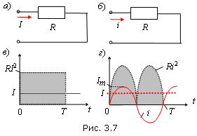
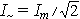

При протекании синусоидального тока i(t) = Im sinωt через резистор с линейным сопротивлением R (рис. 3.7, б) в нем за период Т выделяется энергия
равная энергии, выделяющейся в резисторе R (рис.3.7, а) при протекании через него постоянного тока I в течение времени Т (закон Джоуля-Ленца).
|  | Значения этих энергий пропорциональны заштрихованным площадям (рис. 3.7, в и г). Из этого равенства получают формулу действующего значения синусоидального тока ,
при протекании которого через резистор R, в нем выделяется такое же количество теплоты, как если бы через резистор протекал постоянный ток I. Итак, действующее значение гармонического тока i(t) = Im sinωt - это его среднеквадратичное значение за время Т, т. е. |
| . | (3.7) |
Аналогично определяют действующие значения гармонического напряжения и ЭДС:
Действующие значения гармонических функций обозначают соответствующими прописными буквами I, U, E, что и амплитудные значения, но без индекса m. Действующий ток (напряжение) - это основной эксплуатационный параметр цепей синусоидального тока, т. к. тепловое действие тока и механическая сила взаимодействия проводников с токами пропорциональны квадрату тока (произведению токов). Шкалы большинства измерительных приборов (амперметров, вольтметров) проградуированы на эти значения.